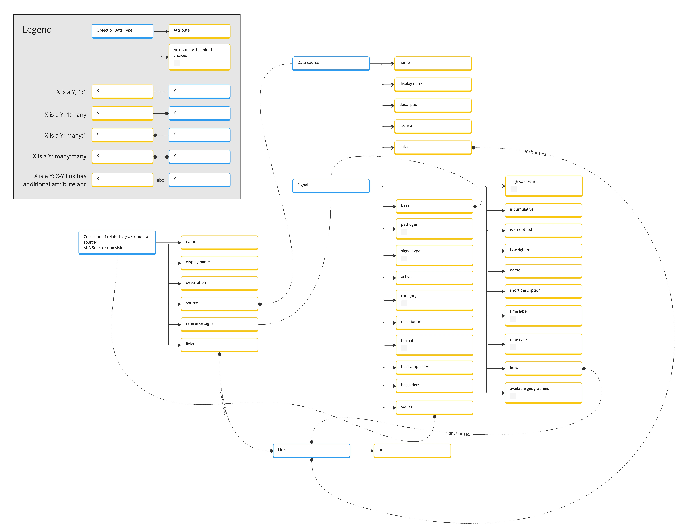
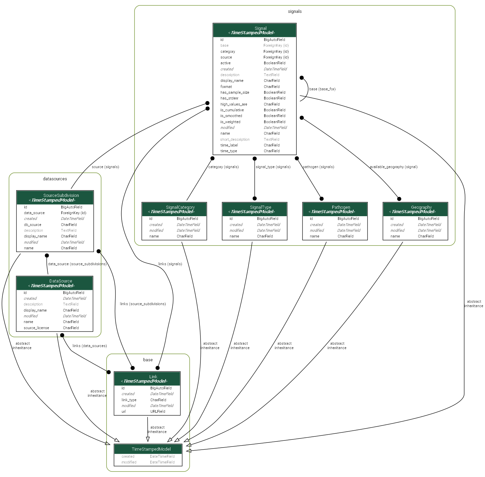

Overview and installation
Single Source of Documentation System
Entity Relationship Diagram
Core libs and DB
All requirements you can find in Pipfile
Getting started
Setup Env Vars
create .env file and add variables like in .env.example
To run locally
Install python:3.10, pip3, pipenv
Using pipenv run pipenv shell
and pipenv install to create virtual environment and install
dependencies
$ pipenv shell
$ pipenv install
Go to src directory and run
$ python manage.py migrate
$ python manage.py test
$ python manage.py runserver
load fixtures
$ python manage.py loaddata .\fixtures\available_geography.json
$ python manage.py loaddata .\fixtures\pathogens.json
$ python manage.py loaddata .\fixtures\signal_categories.json
$ python manage.py loaddata .\fixtures\signal_types.json
if you need test coverage
$ coverage erase
$ coverage python manage.py test
$ coverage report
you can also get test coverage with one command
$ coverage erase && coverage run manage.py test && coverage report
sort imports
$ isort .
check flake
$ flake8 --show-source
To run via docker
Install Docker and docker-compose
Run
$ docker-compose build
$ docker-compose up
Open http://localhost:8000 to view it in the browser
To run via docker and emulate production
Though probably not necessary in most cases, if you want to test/modify/emulate how this will run in production you can:
In
.envset:
DEBUG = 'False'
Modify the app container’s command in
docker-compose.yamlto run:
"gunicorn signal_documentation.wsgi:application --bind 0.0.0.0:8000"
*(Essentially you'll replace just the last line of the command, switching out the "runserver" line)
Open http://localhost to view it in the browser. In this usage your
request will be serviced by Nginx instead of the application directly.
The primary use case for this will be when making changes to the Nginx container image that runs in production and hosts the static file content, or also if making changes to the Gunicorn config.
Changes of this sort should be carefully evaluated as they may require interaction with systems managed by devops folks.
Django admin web interface
Django admin is a web interface for managing the project web application. It is available at the following URL.
http://localhost:8000/admin
The user should have is_staff or is_superuser permissions to access the admin interface.
Documentation
The project documentation is generated and served using the following tools:
Read the docs (Sphynx)
Auto generated documentation for the project web appplication is available at the following URL.
http://localhost:8000/<MAIN_PAGE>/docs/index.html
To clean the documentation, run the following commands:
$ cd ./docs
$ make clean
To generate the documentation, run the following commands:
$ cd ./docs
$ make html
Swagger
Auto generated swagger documentation for the project web appplication is available at the following URL.
http://localhost:8000/<MAIN_PAGE>/api/docs/swagger/
Redoc
Auto generated redoc documentation for the project web appplication is available at the following URL.
http://localhost:8000/<MAIN_PAGE>/api/docs/redoc/